Control Circuit 2026 › Tutorial › Chapter 2
If you want to draw an electrical circuit in Windows Paint, you can. It will not be smart, it will not be very editable, and it will be hard to convince anyone of your circuit's integrity.
That is why we use dedicated tools: tools that are fit for purpose, built on logic, and easy to document and use in the real world. Control Circuit is one of them.
In Control Circuit the most fundamental element is the wire. It is a first-class citizen, and it is smart:
With that knowledge the wiring engine can work out wire numbers, build reports and help you catch design errors before they reach a printout.
Open the Tools tab. The Wiring section is home to every wiring tool.
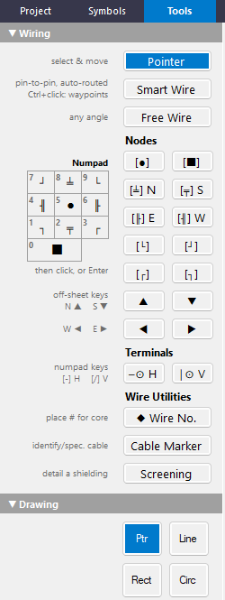
Choose a few node types and place them. Nothing is connected yet: they are just nodes sitting on the sheet.
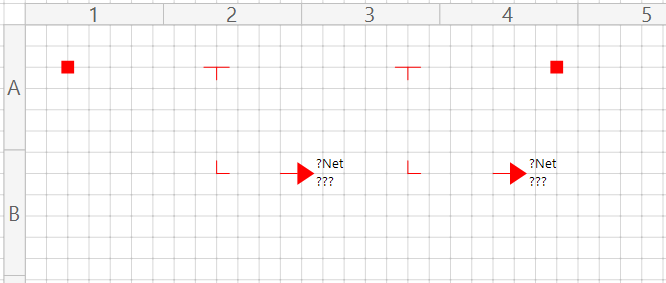
Press Alt+W (Perform Auto-Wire, as in Chapter 1). Wires appear between the nodes that line up.
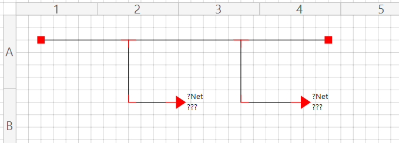
Open the Wiring menu, because the options here only make sense once you know what they are for.
By default the program is in Standard/Manual Mode (ticked in the menu). In that mode, as you connect nodes and symbol pins, whether by hand or with Alt+W, the connections are captured as you make them. Each node or pin now knows what it is connected to. It is not just lines that happen to touch on the sheet; it is relationships.
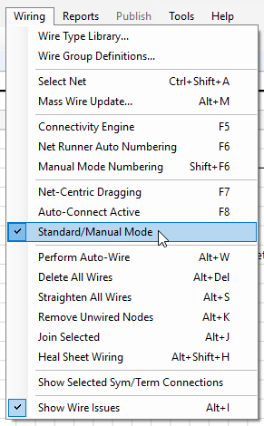
Click any wire or element. If the wiring is good, the whole net is selected and highlighted. The pink square marks the actual element under your cursor.
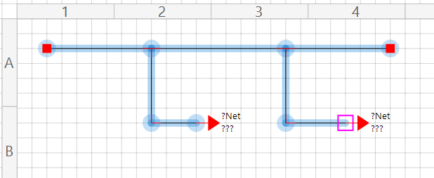
The same wiring can be edited in three different ways. The status bar tells you which one is active.
In Standard/Manual Mode, dragging a node (or nudging it with the arrow keys) moves that node only. Here the Interruption Node has been pulled away from where it started, and its wire stretches to follow.
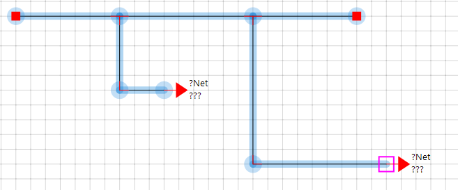
Press F7 to switch on Net-Centric Dragging. Now pick any wire and drag, and the whole net moves in unison.
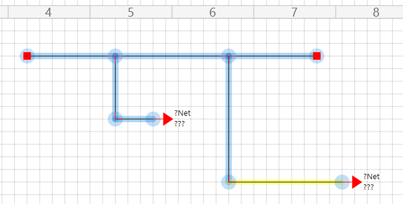
Press F8 to switch on Auto-Connect. (If Net-Centric is still on, press F7 again to turn it off. The two switches are independent, and choosing Standard/Manual Mode from the Wiring menu clears both.) The status bar shows where you are.
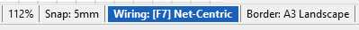
Auto-Connect is for when you drop the node type you want onto the sheet, then mouse or arrow-key nudge it into line with the node or symbol pin you want. The moment a valid connection is possible, snap, the wire is drawn.
Of course, as you scoot a node around it may latch onto the wrong pin when you were after the next one. No problem: select the node, press and hold Alt, and move on.
As you detach a node and move it away, a pink alignment radar appears when a valid connection point is reached.
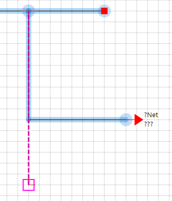
When you release the movement and the Alt key, any wire that is now redundant is deleted, and any new wire is drawn for you.
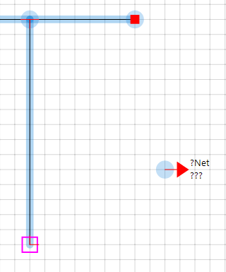
With any node selected, hold Shift and tap an arrow key to change its direction. It works on branch nodes, angle nodes, Interruption Nodes and terminal nodes. (Terminal nodes also have a separate horizontal/vertical setting in their properties.)
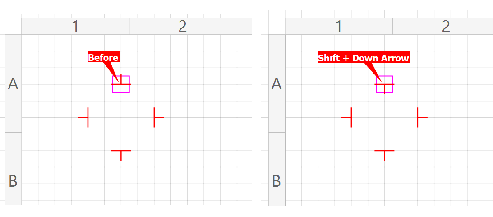
A wire cannot cross from one sheet to the next, but a net can. An Interruption Node says “this wire carries on elsewhere”, and a shared Net Name says where. We will do it on one sheet here; across sheets it works exactly the same way.
Press Alt+Delete. You are asked whether to delete all the wires on the sheet; choose Yes. Delete the nodes you no longer need, and re-arrange the rest into the layout shown, then press Alt+W to wire them up.
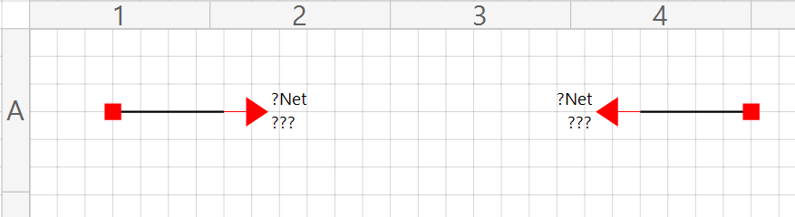
Select the first Interruption Node. In the Wiring section of its properties, type any name you like into Net Name, here BOB, and press Apply Wiring Changes. Then do exactly the same for the second node: the same Net Name, and Apply again.
The ??? and ?Net you see are placeholders. They stay until the program has had the chance to link the two nodes, which is the next step.
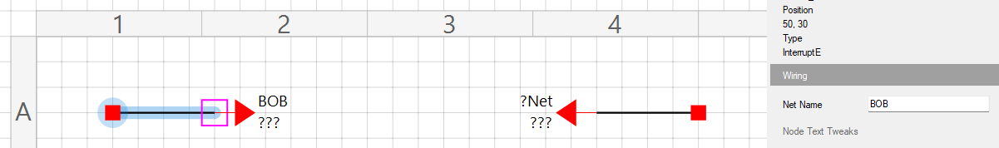
From the Project menu choose Update Node/Wire/Cable Cross References (Alt+U). However big the project, the cross-reference engine walks every Interruption Node on every sheet and links them up.
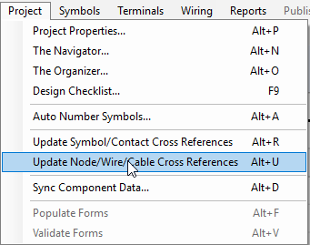
Each node now shows its partner's sheet and grid reference in place of the ???.
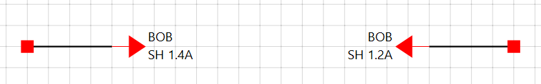
Interruption Nodes link in pairs: one node to one other. If a name is left with an odd one out, the update stops and gives you an error report.
Twenty nodes called BOB is fine; they pair up. Add a twenty-first and one of them has no partner, so you get a report. Bob has no partner, poor Bob. The report also lists any Net Name used by more than two nodes, which is correct for a net that crosses several sheets but worth a glance otherwise.
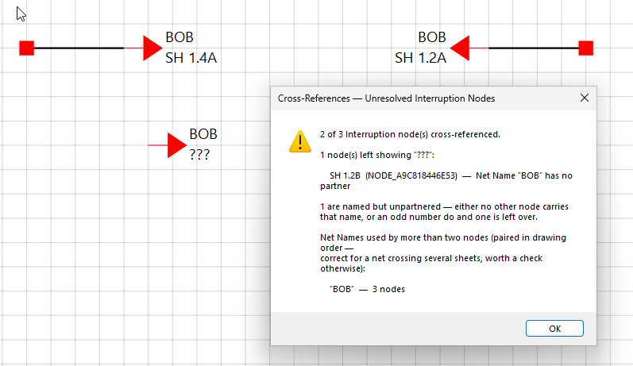
???.A nifty extra: select a source Interruption Node and press J. If the other node is valid, the cursor takes you straight to it. If it lives on another sheet you are asked to save the current one first (if it needs it) and then the new sheet loads. A landing beacon flashes briefly so you can see where you arrived.
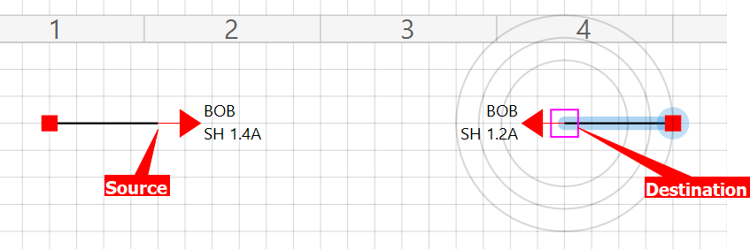
Chapter 3 looks at Net Names and Wire Numbering: how a net gets its name, and how the engine turns what it knows into wire numbers. Until then, the reference topics behind this chapter are in the program's help (F1): Working with Wiring, Perform Auto-Wire and One & Done Mode.